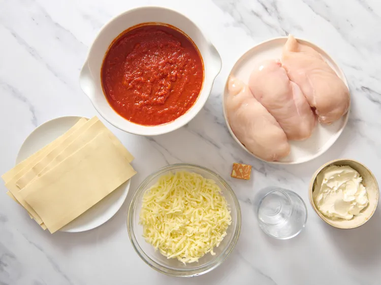
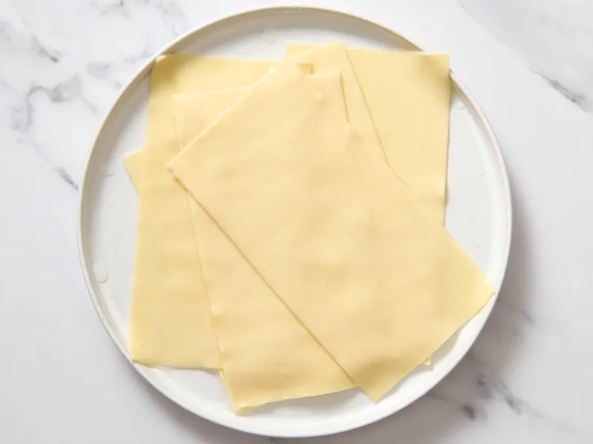
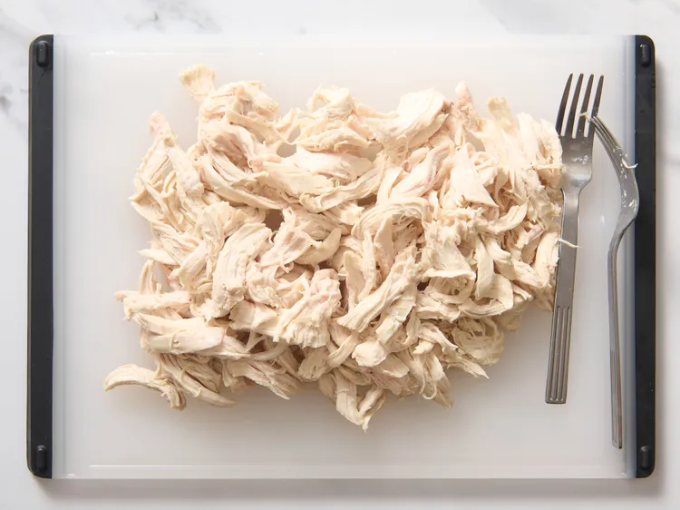
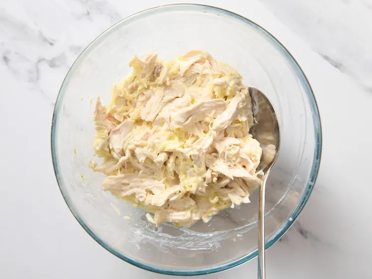
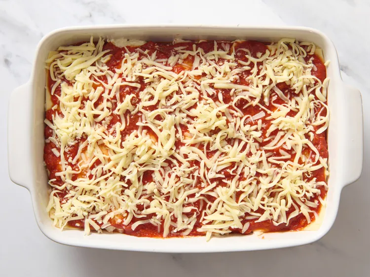
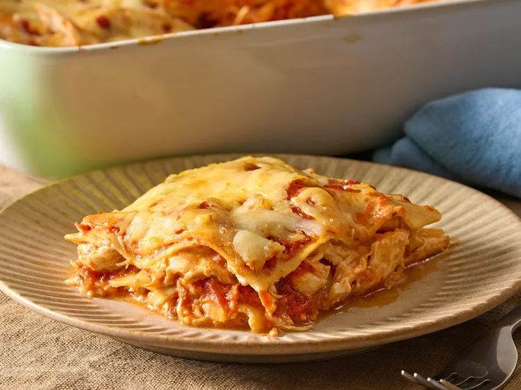

Description
This chicken lasagna is made with tender chicken breasts, red sauce, and lots of mozzarella cheese for a fantastic flavor combination. Everyone who tastes it raves!
Ingredients
- 6 uncooked lasagna noodles
- 3 skinless, boneless chicken breast halves
- 2 cups shredded mozzarella cheese, divided
- 1 (8 ounce) package cream cheese, softened
- ¼ cup hot water
- 1 cube chicken bouillon
- 1 (26 ounce) jar spaghetti sauce
Steps
- Step 1
- Step 2
- Step 3
- Step 4
- Step 5
- Step 6
- Step 7
Gather all ingredients. Preheat the oven to 350 degrees F (175 degrees C).

Bring a large pot of lightly salted water to a boil. Cook lasagna noodles in boiling water, stirring occasionally, until tender yet firm to the bite, about 8 minutes. Drain, rinse with cold water, and set aside.

Meanwhile, place chicken in a saucepan with enough water to cover; bring to a boil. Cook until chicken is no longer pink and the juices run clear, about 20 minutes. Remove chicken from the saucepan and shred.

Combine shredded chicken, 1 cup mozzarella cheese, and cream cheese in a large bowl. Dissolve hot water and bouillon in a liquid measure; pour over chicken mixture and stir until well combined.

Spread 1/3 of the spaghetti sauce in the bottom of a 9x13-inch baking dish. Cover with 1/2 of the chicken mixture and top with 3 lasagna noodles; repeat. Top with remaining sauce and sprinkle with remaining 1 cup mozzarella cheese.

Bake in the preheated oven for 45 minutes.

Serve and enjoy!
